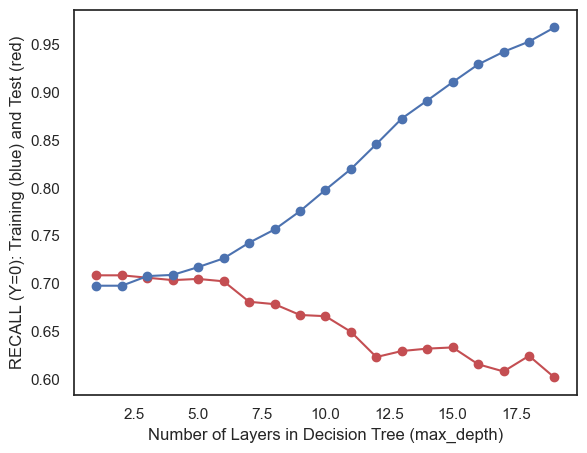

Decision Trees are an important branch in machine learning that are used for classification and regression problems. The process of a decision tree is carried out by partitioning datasets repeatedly, splitting the data into different regions based on specified criteria. Decison trees contain a root node, which is the starting point (whole dataset), decision nodes and leaf nodes which are connected by edges (or branches) on splitting criteria. Decision trees take a feature set and partition data based on these features to reach predictions for the target variable. Random forests and Boosting are techniques that are used to enhance the performance of decision trees, which we will discuss later.
Method
Code
import pandas as pdimport seaborn as sns import matplotlib.pyplot as pltfrom sklearn import treefrom IPython.display import Imageimport numpy as npfrom sklearn.metrics import accuracy_scorefrom sklearn.metrics import precision_scorefrom sklearn.metrics import recall_scorefrom sklearn.model_selection import train_test_splitimport osos.chdir('/Users/samanthamoon/Desktop/DSAN 5000/dsan-5000-project-samjmoon/dsan-website/5000-website/data-cleaning')movie_df = pd.read_csv('popularity_data_analysis.csv')
plt.figure(figsize=(6.5,5))plt.plot(test_df['max_depth'], test_df['Recall Y=0'], marker='o', linestyle='-', color='r')plt.plot(train_df['max_depth'], train_df['Recall Y=0'], marker='o', linestyle='-', color='b')plt.ylabel('RECALL (Y=0): Training (blue) and Test (red)')plt.xlabel('Number of Layers in Decision Tree (max_depth)')plt.figure(figsize=(6.5,5))plt.plot(test_df['max_depth'], test_df['Recall Y=1'], marker='o', linestyle='-', color='r')plt.plot(train_df['max_depth'], train_df['Recall Y=1'], marker='o', linestyle='-', color='b')plt.ylabel('RECALL (Y=1): Training (blue) and Test (red)')plt.xlabel('Number of Layers in Decision Tree (max_depth)')plt.figure(figsize=(6.5,5))plt.plot(test_df['max_depth'], test_df['Recall Y=2'], marker='o', linestyle='-', color='r')plt.plot(train_df['max_depth'], train_df['Recall Y=2'], marker='o', linestyle='-', color='b')plt.ylabel('RECALL (Y=2): Training (blue) and Test (red)')plt.xlabel('Number of Layers in Decision Tree (max_depth)')
Text(0.5, 0, 'Number of Layers in Decision Tree (max_depth)')

Code
model = tree.DecisionTreeClassifier(max_depth=3)model = model.fit(x_train, y_train)yp_train=model.predict(x_train)yp_test=model.predict(x_test)
from sklearn.ensemble import RandomForestClassifier# Create and fit the Random Forest modelrf_model = RandomForestClassifier(n_estimators=100, random_state=0, max_depth=3)rf_model.fit(x_train, y_train)yp_train_rf = rf_model.predict(x_train)yp_test_rf = rf_model.predict(x_test)print("------TRAINING (Random Forest)------")confusion_plot(y_train, yp_train_rf)print("------TEST (Random Forest)------")confusion_plot(y_test, yp_test_rf)#visualizing one of the trees in the Random Forestplot_tree(rf_model.estimators_[0], x_train, y_train)
I applied a decision tree model to my movie dataset, using the “popularity” column as the target variable. After testing various max_depth values, it was determined that the optimal max_depth is 3 from visualizing the training and testing sets recall scores against different max-depth values. I trained a random forest model to see if it would improve my decision tree model. The accuracy scores from teh single decision tree model and the random forest model perfomed similarly, with the decision tree model slightly higher. Because my dataset is not very large, a single decision tree suffices.
Conclusion
We explored the movie dataset with the following machine learning techniques: decision trees and random forests. Both models performed ddecently, with the decision tree demonstrating a slightly more robust understanding during training that applied well to the testing data. The random forest model showed slightly lower accuracy but will still on par with the decision tree method.
While I was able to apply these models to my dataset, there is room for refinement which might include exploration of additional features or alternative algorithms that can enhance predictive accuracy. Applying machine learning algorithms to movie data holds many possibilities for understanding audience preferences while defining a movie’s popularity. I would like to revisit the decision tree and random forest models with additional data to obtain more predictive accuracy.